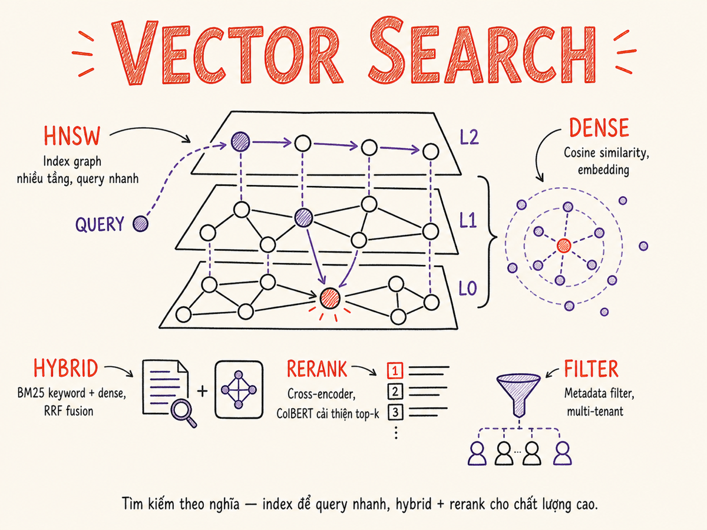

Vector Search & Knowledge Stores
Từ dot product đến HNSW, từ BM25 hybrid đến multitenancy — mọi thứ cần biết để xây dựng retrieval layer production-grade.

15.1 Vector search basics
Vector search tìm kiếm các điểm gần nhau trong không gian vector nhiều chiều. "Gần nhau" có thể được đo bằng nhiều metric khác nhau:
| Metric | Formula | Khi nào dùng | Range |
|---|---|---|---|
| Cosine similarity | cos(θ) = A·B / (|A||B|) | Text embeddings — quan tâm hướng, không phải magnitude | [-1, 1] |
| Dot product | A·B = Σ aᵢbᵢ | Khi vectors đã normalized (= cosine). MatMul GPU-friendly | Unbounded |
| L2 (Euclidean) | √Σ(aᵢ-bᵢ)² | Image embeddings, khi magnitude quan trọng | [0, ∞) |
| Manhattan (L1) | Σ|aᵢ-bᵢ| | Ít dùng, robust hơn L2 với outliers | [0, ∞) |
Nếu embedding model đã L2-normalize vectors (|v| = 1 cho mọi vector), cosine similarity = dot product. Hầu hết modern text embedding models output normalized vectors. Dùng dot product khi có thể — nhanh hơn vì không cần chia cho norm.
k-Nearest Neighbor (kNN) search
Mục tiêu: cho query vector q, tìm k vectors trong corpus gần nhất với q. Với corpus nhỏ (< 100k vectors), brute-force exact search đủ nhanh. Với corpus lớn hơn, cần approximate nearest neighbor (ANN) algorithms.
15.2 Indexing algorithms
| Algorithm | Build time | Query time | Memory | Recall | Best for |
|---|---|---|---|---|---|
| Flat (brute-force) | O(n) | O(n·d) | n·d floats | 100% exact | < 100k vectors; gold standard for eval |
| HNSW | O(n log n) | O(log n) | Cao (~graph overhead) | 95–99% | Production default; best recall/speed tradeoff |
| IVF (Inverted File) | Cần k-means pre-train | O(√n) | Thấp hơn HNSW | 85–95% | Billion-scale với memory constraint |
| ScaNN | Cao | Rất nhanh | Trung bình | 90–98% | Google-scale; throughput-critical |
| DiskANN | Cao | Nhanh (SSD-backed) | RAM rất thấp (dùng SSD) | 90–97% | Khi RAM là bottleneck; corpus > 100M vectors |
HNSW key parameters
M— số edges mỗi node có ở layer 0 (default 16). Tăng → recall tốt hơn, memory nhiều hơn.ef_construction— beam width khi build graph (default 200). Tăng → chất lượng graph tốt hơn, build chậm hơn.ef(ef_search) — beam width khi query (runtime parameter). Tăng → recall tốt hơn, query chậm hơn.
15.3 Quantization for vectors
Quantization nén vectors để giảm memory footprint — trade recall cho storage. Critical khi corpus lớn (vài chục triệu vectors).
| Method | Nén | Recall impact | Cách hoạt động |
|---|---|---|---|
| Scalar (SQ8) | 4x (float32 → int8) | ~1–2% recall loss | Map mỗi dimension [min, max] → [0, 255] |
| Binary | 32x | 5–15% recall loss | Sign bit only — cực nhanh với SIMD popcount |
| Product Quantization (PQ) | 16–64x | 3–8% recall loss | Chia vector thành sub-vectors, mỗi sub-vector dùng codebook riêng |
Best practice: dùng HNSW + SQ8 là default tốt cho hầu hết use case — 4x memory reduction với recall loss không đáng kể. Qdrant gọi đây là "scalar quantization", pgvector dùng halfvec (float16, 2x reduction).
15.4 Hybrid retrieval (BM25 + Dense)
Dense vector search giỏi semantic matching nhưng kém với exact keywords (product codes, names, acronyms). BM25 giỏi exact match nhưng bỏ lỡ semantic synonyms. Hybrid kết hợp cả hai.
Reciprocal Rank Fusion (RRF)
RRF là fusion algorithm đơn giản và hiệu quả nhất:
# RRF score cho document d
RRF(d) = Σ_r 1 / (k + rank_r(d))
# k = 60 (Cormack et al. default)
# rank_r(d) = rank của d trong result list r
# Documents không có trong list r không góp điểmƯu điểm của RRF: không cần tune score normalization — chỉ dùng rank, không dùng raw score. Hoạt động tốt ngay cả khi BM25 và dense scores có scale rất khác nhau.
Weighted hybrid
Thay RRF bằng weighted sum: score = α · dense_score + (1-α) · bm25_score. Cần normalize scores về cùng range trước (min-max normalization per result set). Cho phép tune α theo domain — code search có thể dùng α=0.3 (favor BM25 cho exact names), doc Q&A dùng α=0.7.
15.5 Reranking
First-stage retrieval (vector search) ưu tiên recall — lấy về nhiều ứng viên. Reranker ưu tiên precision — sort lại để top-k thực sự relevant.
Cross-encoder reranker
Cross-encoder nhận (query, passage) pair và output relevance score. Khác embedding model (bi-encoder) — cross-encoder thấy cả hai cùng lúc nên capture interaction tốt hơn, nhưng không thể pre-compute passage embeddings → chỉ dùng cho reranking (top 20-100 candidates), không phải first-stage retrieval.
Popular models: bge-reranker-v2-m3 (multilingual, open-source), Cohere Rerank 4 (API — phiên bản mới nhất 2025, thay thế Rerank 3.5), Voyage rerank-2.5 (API — hỗ trợ instruction-following, context 32K tokens, ra mắt tháng 8/2025), Jina Reranker (API + open-source).
ColBERT / ColPali (late interaction)
ColBERT là middle ground — pre-compute per-token embeddings cho passages (offline), tại query time chỉ cần compute query token embeddings rồi MaxSim. Nhanh hơn cross-encoder, chính xác hơn bi-encoder. Phù hợp khi cần chất lượng cao và latency < 100ms.
ColPali (ICLR 2025) mở rộng ColBERT sang tài liệu dạng ảnh/PDF — dùng vision language model (PaliGemma-3B) để tạo multi-vector embeddings từ các patch của trang tài liệu. Cho phép retrieval trực tiếp từ page screenshot mà không cần OCR hay text extraction. LanceDB và Qdrant đã hỗ trợ native late interaction index cho ColBERT/ColPali.
LLM rerank
Gửi query + top-N passages cho LLM, yêu cầu rank theo relevance. Chất lượng cao nhất nhưng latency và cost cao nhất. Phù hợp cho offline eval, không nên dùng trong realtime path trừ khi SLA cho phép.
Khi nào cần reranker?
Reranker không phải lúc nào cũng cần. Thêm reranker khi:
- Precision@3 của first-stage retrieval thấp (< 70%) theo eval set
- Query thường dài, phức tạp (chứa nhiều conditions)
- Domain-specific jargon khiến general embedding model kém
- Kết quả RAG thường chứa irrelevant info → model bị distract
15.6 Metadata filtering
Metadata filtering giới hạn search space trước hoặc sau vector search. Ví dụ: chỉ search trong documents của user X, hoặc chỉ documents created after 2024-01-01.
Pre-filter vs Post-filter
| Strategy | Cách hoạt động | Ưu điểm | Nhược điểm |
|---|---|---|---|
| Pre-filter | Apply metadata filter TRƯỚC vector search, chỉ search trong filtered subset | Nhanh hơn, ít computation | Nếu filter quá selective, subset nhỏ → HNSW recall giảm mạnh |
| Post-filter | Vector search full corpus, sau đó filter results | Recall tốt hơn của ANN index | Phải fetch nhiều candidates hơn; có thể return < k results |
| Filtered HNSW | Navigate graph nhưng skip nodes không pass filter | Best of both — tốt cả recall lẫn performance | Cần vector DB hỗ trợ (Qdrant, Weaviate, Pinecone) |
Nếu dùng pre-filter với HNSW và filter rất selective (ví dụ: chỉ 100 documents trong corpus 1M), HNSW graph được build trên toàn bộ corpus nhưng chỉ được traverse qua 100 nodes — graph structure không còn tối ưu. Qdrant's filtered HNSW và Weaviate's roaring bitmaps giải quyết vấn đề này.
15.7 Multitenancy patterns
| Pattern | Khi nào dùng | Ưu điểm | Nhược điểm |
|---|---|---|---|
| ① Shared collection | Nhiều tenants nhỏ, data volume thấp | Ops đơn giản, ít collections để quản lý | Filter-based isolation — security risk nếu bug; noisy neighbor |
| ② Per-tenant collection | Tenants có data lớn hoặc yêu cầu isolation | Full isolation, HNSW graph tối ưu cho từng tenant | Nhiều collections → overhead ops; cold collections lãng phí RAM |
| ③ Per-tenant shard | Enterprise tenants với data rất lớn | Scale horizontally, dedicated resources có thể | Phức tạp nhất, cần cluster setup |
15.8 Updating indices
Incremental insert
Hầu hết vector databases hỗ trợ upsert — insert mới hoặc update nếu đã tồn tại theo ID. Với HNSW, insert mới chỉ thêm node vào graph hiện có — không cần rebuild. Nếu upsert nhiều (delete + insert), HNSW graph có thể degrade qua thời gian.
Soft delete
Thay vì xóa ngay, mark vector với deleted=true metadata, filter ra trong queries. Cho phép rollback. Cần periodic "vacuum" để thực sự xóa và free memory.
Re-index
Khi thay đổi embedding model hoặc indexing parameters, phải rebuild index từ đầu. Pattern an toàn:
- Build new collection/index song song (không ảnh hưởng production)
- Double-write: new documents vào cả old và new index
- Validate new index với eval set
- Atomic cutover: switch query traffic sang new index
- Drain và xóa old index
15.9 Sparse vectors (SPLADE)
SPLADE (SParse Lexical AnD Expansion) là learned sparse retrieval — model tạo ra sparse vector với hàng chục nghìn dimensions (vocab size) nhưng chỉ ~100–200 non-zero entries. Kết hợp tốt nhất của BM25 (interpretable, exact match) và dense (semantic expansion).
Khi SPLADE predict sparse vector cho "heart attack", nó có thể assign weight cao cho "cardiac arrest", "myocardial infarction", "chest pain" — các term liên quan mà BM25 bỏ lỡ. Đây gọi là query/doc expansion.
Qdrant và Pinecone hỗ trợ sparse vectors natively. Thay thế BM25 tốt hơn trong hybrid setup, đặc biệt với technical/domain text. Trade-off: cần inference model để tạo sparse vectors (chậm hơn BM25), index lớn hơn dense.
15.9b Contextual Retrieval & Late Chunking
Contextual Retrieval (Anthropic, tháng 9/2024) giải quyết vấn đề context loss khi chunk tài liệu: dùng LLM tạo một đoạn context ngắn cho mỗi chunk trước khi embed, giúp embedding "hiểu" chunk nằm ở đâu trong tài liệu gốc. Kết quả: giảm 49% retrieval failures khi kết hợp Contextual Embeddings + Contextual BM25; thêm reranking giảm thêm tới 67% lỗi.
Late Chunking (Jina AI, 2024) là kỹ thuật bổ sung — thay vì chunk trước rồi embed từng chunk độc lập, encode cả document với long-context embedding model, sau đó mới tách embeddings theo chunk boundary bằng mean pooling. Chunk embeddings thu được mang đầy đủ ngữ cảnh từ toàn bộ document. jina-embeddings-v3 hỗ trợ late_chunking=True qua API.
15.10 Production sizing
RAM estimation
Rule of thumb cho HNSW (float32, no quantization):
# RAM ước tính cho HNSW
raw_vectors = n_vectors × dim × 4 # bytes (float32)
graph_overhead = n_vectors × M × 2 × 8 # M=16 edges, 8 bytes per edge
total_ram = (raw_vectors + graph_overhead) × 1.2 # 20% overhead
# Ví dụ: 1M vectors, dim=1536 (text-embedding-3-small / voyage-3)
raw_vectors = 1_000_000 × 1536 × 4 = 6.14 GB
graph_overhead = 1_000_000 × 16 × 2 × 8 = 0.26 GB
total_ram ≈ 7.7 GB # với SQ8 quantization → ~2.4 GB
# pgvector halfvec (float16, 2x reduction) → ~3.9 GB cho cùng corpus| Scale | Vectors | Dim | RAM (float32) | RAM (SQ8) | Recommended |
|---|---|---|---|---|---|
| Small | 100k | 768 | ~0.4 GB | ~0.1 GB | Single node, 4 GB RAM |
| Medium | 5M | 1536 | ~36 GB | ~10 GB | Single node, 32 GB RAM + SQ8 |
| Large | 100M | 1536 | ~720 GB | ~200 GB | Cluster, DiskANN, hoặc IVF+PQ |
| Massive | 1B+ | 768 | ~3 TB | ~800 GB | DiskANN (SSD-backed) + distributed |
Query throughput
HNSW query latency scale với ef parameter và số CPUs. Typical numbers trên modern hardware (HNSW, dim=1536, 10M vectors):
- Single core: ~200-500 QPS
- 8 cores: ~1500-3000 QPS
- GPU-accelerated (FAISS GPU, RAFT): 10-100x throughput, dùng khi QPS > 10k
Typical query (Qdrant-style pseudo)
# Hybrid search: dense + sparse + metadata filter + rerank
from qdrant_client import QdrantClient, models
client = QdrantClient("localhost", port=6333)
results = client.query_points(
collection_name="knowledge_base",
prefetch=[
# Dense retrieval
models.Prefetch(
query=dense_vector, # float[] from embedding model
using="dense",
limit=50,
),
# Sparse retrieval (BM25 or SPLADE)
models.Prefetch(
query=models.SparseVector(indices=indices, values=values),
using="sparse",
limit=50,
),
],
# RRF fusion
query=models.FusionQuery(fusion=models.Fusion.RRF),
# Metadata filter
query_filter=models.Filter(
must=[models.FieldCondition(
key="tenant_id",
match=models.MatchValue(value=current_tenant)
)]
),
limit=10,
with_payload=True,
)Tóm tắt
- Metric: cosine similarity (= dot product nếu normalized) cho text; L2 cho images. HNSW là default tốt cho hầu hết use cases.
- Quantization: SQ8 cho 4x memory reduction với <2% recall loss — bật ngay khi corpus > 1M vectors.
- Hybrid retrieval: BM25 + dense với RRF fusion cải thiện recall đáng kể, đặc biệt cho exact-match queries. SPLADE là bước tiến hơn BM25.
- Reranker: thêm khi first-stage precision thấp. Cross-encoder balance tốt giữa chất lượng và latency. Cohere Rerank 4 (2025) và Voyage rerank-2.5 là lựa chọn API hàng đầu hiện tại.
- Metadata filtering: dùng filtered HNSW (Qdrant/Weaviate) thay vì pre-filter đơn thuần để tránh recall drop. pgvector 0.8 bổ sung iterative index scan giải quyết vấn đề tương tự.
- Multitenancy: shared collection cho tenants nhỏ, per-tenant collection khi cần isolation mạnh.
- Sizing: RAM = n_vectors × dim × 4 bytes + graph overhead. SQ8 giảm 4x. DiskANN khi RAM là bottleneck. Turbopuffer và LanceDB dùng object storage (S3) làm primary store — giảm chi phí tới 95% so với in-memory DBs.
- Contextual Retrieval + Late Chunking: hai kỹ thuật tiền xử lý giúp embedding chất lượng hơn mà không đổi model.